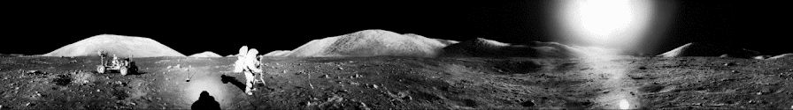
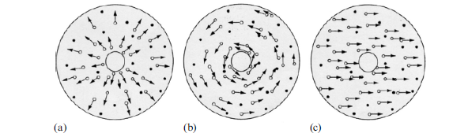
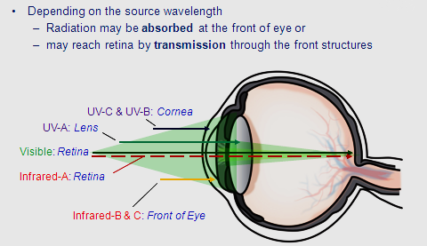
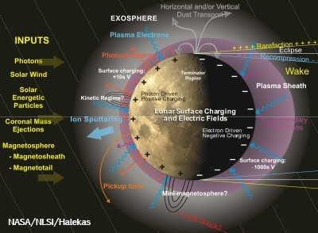
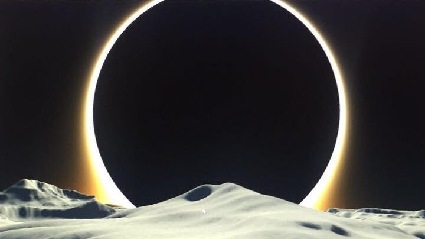
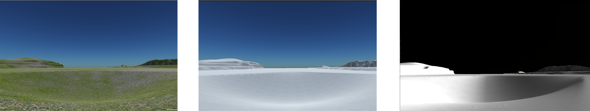
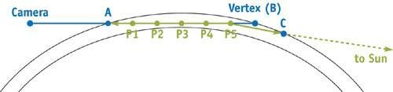
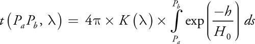

Apollo Missons
Upon landing on the Moon, the Apollo astronauts encountered an environment where the visual-sensory cues used for depth and distance perception on Earth were no longer reliable. Astronauts significantly underestimated the sizes of craters, hill slopes and distances to landmarks. Many faced unanticipated challenges when traversing lunar terrain, such as physical overexertion and the depletion of oxygen resources(4-8). It is hypothesized that among the most critical sources of perceptual errors are the unique reflectance properties of the lunar surface and the absence of an Earth-like atmosphere on the Moon(6,9). The lack of an atmosphere, or “exosphere” on the Moon causes dramatic changes in the scattering of light across the lunar surface and limits depth and distance perception of terrain(10,8).

The lack of aerial (atmospheric) perspective on the Moon also limits the ability to differentiate distances between two landmarks. This increases the clarity of distant objects which make them appear much closer and caused many astronauts to underestimate distances to craters or hills during navigation(10).

However, this benefit was often counteracted by deep shadows that limited depth perceptions of slope in low sun elevation. Astronaut Al Bean reported the formation of deep shadows that limited perception of depth and slope in low sun elevation, which caused him to overestimate an 11° slope of Surveyor Crater by almost 30° when it was partially concealed by shadows(7, 10). The dramatic effects of sun elevation on the Moon are caused by the characteristic inconsistencies of light scattering in the exosphere which can dramatically change as a function of reflectance angle(20). In varying degrees of sun elevation, this form of scattering can create the inverse effect of backscatter by creating an abnormal distribution of light across an object’s surface, causing light to refract in a different direction that does not reach the observer and concealing the object completely(13).

In the LPVR lab, Unity 3D VR renderings (image below) were created in 90° (left) 60° (middle) and 30° (right) sun elevation on the Moon to replicate the dramatic, abrupt changes in visibility experienced by Apollo astronauts (see image below).

Bottom row (crater): Sun elevations at 90° (left), 60° (center), 30° (right)
Psychophysics
What is Psychophysics?
Psychophysics quantitatively investigates the relationship between physical stimuli and the sensations and perception they produce. It applies methodological approaches to study the human perceptual system via detection, identification, discrimination, and scaling. Modern applications rely heavily on threshold measurement, ideal observer analysis, and signal detection theory. The study of psychophysics has widespread and important practical applications for understanding human sensory perception. Research has identified nine essential sources of perceptual information that enable humans to accurately perceive depth and distance on Earth(1-3).

In essence, these sources of information are contingent upon the physical properties of Earth – an environment which enables a veridical and reliable source of visual cues for human perception (e.g. light, atmospheric density, gravity, texture, etc.). This is because certain physical and perceptual properties on Earth remain invariant, thereby allowing experimental studies to determine the detection threshold of physical stimuli such as light, sound and touch with great accuracy.
Lunar Psychophysics
The underlying sources of sensory perception are derived from mechanisms in the neurological and physiological systems. Studying these functions has improved scientific understanding on how these mechanisms respond to physical changes in the external environment, as well as the perceptual distortions that result from such changes. However, it is uncertain whether humans possess the sensory capabilities to respond appropriately to new forms of stimuli outside of Earth without adaptation. It is with this foundation that serves as the basis for lunar psychophysics, which aims to transform current theoretical work into a “terrestrial” model and move towards the development of a universal theory of perceptual psychophysics.
Lunar psychophysics is a novel area of specialization in perceptual psychophysics, which considers a range of visual, neurological and physiological components in perception and their relationship to optical properties of light, particulate matter/surface reflectance, atmospheric physics and psychophysics on the Moon.

Initial studies will provide the theoretical basis of lunar psychophysics in considering the visual effects of atmospheric scattering (e.g. Rayleigh scattering and complex particle light scattering or CPLS (13, 14) and its relevance to James J. Gibson’s (1979) ecological theory in the structures of perception. Gibson’s (1979) approach identifies the environmental properties that are inherent to human perception on Earth and thus will serve as a framework for identifying the sources of perceptual distortion in a lunar environment.
Ecological Optics
The fundamentals of lunar psychophysics from a neuro-physio perspective are derived from the original works of James J. Gibson (1979), who proposed an ecological approach to the structures of perception regarding the properties of light and the optic array. One unique assertion of Gibson’s theory is the notion that perception is a form of direct contact with the information contained within the optic array. Such that, perception is not a byproduct of intermediary sensory input that is an intrinsic representation in the mind of the perceiver. Rather, it proposes that perceptual information is intrinsic to the environment, and the most important perceptual stimulus within the environment is light(15). Gibson (1979) claims that the properties of light can be changed based on the medium it is scattered through, thereby influencing the structure of light and the way it interacts with the environment. Without a medium, light is unstructured and thus will not reach the corresponding points on the retinal plane(15, 16). Gibson does not directly reference to any theories of light scattering in his written propositions of light as the most important perceptible structure. However, his structural analysis of ambient light is similar to the intrinsic properties of Rayleigh scattering or an Earth-like atmosphere, where light is transmitted uniformly and the surfaces reflect it diffusely. It is with this atmospheric medium that light can possess certain invariant properties and carry information for perception.
Optic Flow Theory
The study of lunar psychophysics is also rooted within Gibson’s (1950) theory of optic flow, which proposed the existence of a relationship between visual perception and underlying biological mechanisms of motion. Gibson’s theory of optic flow proposes that humans possess biological mechanisms that enable invariant features of perception. Humans have evolutionary mechanisms to interpret unstable sensory input which allows for a constant stable view of the world, and this is a result of changes in the flow of the optic array. The flow on the optic array provides essential information about motion through the environment; specifically, information about what type of movement (e.g. rotational or directional) is taking place(17). The figure below refers to the three optic flow components, otherwise known as “particle flow fields,” which are afforded by invariant properties (i.e. light and surface reflectance) that contribute to motion perception in Earth environments.
Gibson (1979) also claimed that any space filled with unstructured light (i.e. absence of an atmosphere and/or diffused reflectance across surfaces) is as devoid of information as a “fog-filled medium”(3, 16). In theory, this assumption is in accordance with the structural integrity of a Rayleigh-like atmosphere, such that ambient light can emerge in dynamic, predictable interactions with the environment when the perceiver is in motion.
The cues humans use to interpret this information are invariant features of the optic array, and this invariant information such as light and surface reflectance properties remain constant as the observer moves through an environment. However, the question of whether this information remains invariant outside of an environment which humans are ecologically bounded (Earth) has yet to be determined. In theory, observing a distortion of perceptual information due to changes in the properties of light during motion would provide evidence suggesting these perceptual sources of information are Earth-based and no longer invariant in extraterrestrial environments.
Physiological Optics
Gibson’s assumptions can be more fully elucidated when using physiological optics to understand the interactions between the human eye and the properties of light. Due to the anatomical structure of the human eye, different wavelengths of light affect different regions of the eye in different ways. In order to see, visible light must pass through the cornea and lens to form an image at the back of the eye on the retina.
However, light on either side of the visible spectrum and near infrared (i.e. ultraviolet, medium and far infrared) is absorbed at the front of the eye by the cornea and lens, and thus never reach the retina. This preemptive absorption can damage the front of your eye. However, an interesting feature of eye physiology is that the cornea and the lens can regenerate themselves from damage in a few days (obviously, depending on severity), whereas the retina cannot.

How is this relevant to lunar psychophysics?
Humans can only see light the on visible spectrum. In future space explorations, as humans move further outside of Earth’s magnetosphere, they will be continually exposed to the full spectrum of light and with greater intensity; the majority of which is normally filtered through Earth’s atmosphere before it reaches the human eye. Prolonged exposure could have negative, and perhaps irreversible effects on vision and perception. Thus, understanding the visual effects of light scattering on the Moon is the first step towards determining the extent to which humans can respond appropriately to dramatic changes in light beyond the visible spectrum in space.
The Lunar Atmosphere
The presence of atomic and molecular particles is referred to as the Moon’s atmospheric medium; also called the “lunar atmosphere” or “exosphere”(33) . The lunar atmosphere consists of high energy photons and solar wind particles that create chemical reactions with evaporating material from the surface(35). However, due to reduced gravity on the Moon (0.18g), the gases created from chemical interactions disperse from the lunar exosphere rather quickly and are spread out to the point where they rarely collide with one another(34).
On the Apollo missions, measuring the composition of the Moon’s atmosphere was difficult due to extreme heating and evaporation of surface experiments(32). Thus, knowledge on the composition of the lunar atmosphere near the surface is often variable between findings(33). One important consensus on the lunar atmosphere is its relative density, which is extremely thin compared to that of Earth’s. The density of the lunar atmosphere is only 100 molecules per cubic centimeter; whereas Earth's atmosphere at sea level has about 100 billion molecules per cubic centimeter(33).
The Lunar Surface
Lunar Dust
On the Moon, dust particles are dispersed approximately 1.5 meters above the surface due to a significant reduction in gravity(15, 16). Dust particles in the exosphere consist of properties that create a less uniform distribution of reflectance across the surface, resulting in a different, complex form of light scattering(23, 24). Evidence for this phenomenon comes from observations of the “lunar horizon glow”, which is thought to be produced by the scattering of sunlight by exospheric dust(5, 13, 27). According to Tim Sharp (2012), these dust particles are described as, “microscopic cannon balls flying unimpeded on curved, ballistic trajectories that bounce across the lunar surface.”
Recent observations of light scattering and lunar dust near the surface have identified a series of complex lunar dust particles (non-spherical grains that are non-uniform in composition) and can be used to virtually simulate the visual effects of light scattering on the Moon(13). Richard and colleagues (2011) developed a model to examine the scattering properties of “virtual” lunar dust that incorporates a series of complex lunar dust particles (non-spherical grains that are non-uniform in composition) which can be used to simulate virtual conditions in which Mie scattering does and does not apply on the Moon.
These virtual simulations have shown that the scattering of realistic lunar dust can be several times brighter than the typical range of Mie particles that have been historically modeled in the lunar exosphere. When the visual effects of these models are applied in Unity, this new VR model produces more visually accurate effects of light scattering observed on the Apollo missions(13). Refer to the Rendering Planetary Atmospheres section for additional information.

Reflectance Properties of Lunar Regolith
On Earth, Rayleigh scattering influences the appearance of reflectance properties on the surface objects, known as the Bi-directional Reflection Distribution Function (BRDF)(10). The illumination of an Earth-like or “Lambertian” surface is directly proportional to the cosine of the angle of occurrence, which results in the scattering of light to be dispersed equally in all directions. Thus, a person viewing an object on a Lambertian surface would observe the same level of brightness across various objects in a scene, regardless of their orientation relative to the light source.
Lambertian surfaces on Earth have characteristic properties such as layout, shape, texture, shading, composition and spectral reflectance(3). The particolored terrain of Earth also causes surface colors to be commonly associated with specific kinds of surface compositions or textures. In the event the shape of an object results in varying degrees of reflectance on a Lambertian surface, an individual would then rely on visual cues such as shading, texture and color to perceive an object’s surface or 3D shape(10).

The lunar regolith, however, has a distinct BDRF known as “Non-Lambertian” reflectance, which can cause dramatic changes in the scattering of light across the Moon’s surface. Lunar regolith is a layer of loose, fine grained material that includes dust, soil and broken rock on the Moon’s surface(23). The surface of the Moon also lacks Lambertian spectral reflectance properties, causing the terrain to appear grey in color.
The use of certain Lambertian characteristic properties as a visual reference for distance and depth on the Moon can be unreliable. This effect was documented by astronaut John Young, who reported having no visibility of nearby craters due to the abundance of light that washed out shadows of terrain, which would normally provide information about the size and appearance of objects and landmarks.
Terrain Mapping in VR
To create the most accurate representation of the unique reflectance properties on the lunar surface, an image of flat regolith on lunar terrain was mapped on VR terrain as a repeated texture. The terrain and textures were then modified using Perlin Noise, which is an extremely powerful algorithm that is used often in procedural content generation. Using this application, we were able to closely match the varying reflectance properties to simulate the visual effects of backscattering and deep shadows; creating an accurate visual depiction of lunar terrain as seen in Apollo images.

Right image: NASA Apollo Archives
Atmospheric Light Scattering Theory
Rayleigh Theory
The atmospheric medium through which light is scattered on Earth consists of invariant properties that provide an optimal environment for veridical (direct or accurate) perception of physical stimuli. Earth’s atmosphere is constructed of unique properties that consist of a specific range of uniform size particles. The scattering of light occurs when light strikes a range of small, non-absorbing spherical particles, known as Rayleigh scatter, which results in the omnidirectional scattering of light across the surface(19).

Image credit (right): Sharayanan(36)
Mie Theory
Mie theory assumes the scatter of light can vary based on the size of particles, thus increasing in complexity. It accounts for a larger range of particles in the air that can possess different reflectance and absorbance properties. One example is the scattering of aerosols (such as dust and pollution).
On a hazy day, Mie scattering causes the sky to look a bit gray and causes the sun to have a large white halo around it. Mie scattering can also be used to simulate light scattered from small particles of water and ice in the air, to produce effects such as rainbows.
Unlike Rayleigh theory, Mie assumes particles of much larger sizes, such as α = 10, creating scatter properties which are not uniformly distributed. In instances when all wavelengths of light are scattered equally, Mie scattering is occurring; hence why clouds appear white. The characterization of the scattering of sunlight which occurs on the Moon has been modeled using the theory of Mie scatter, due to the scattering of light in the vacuum of space(27, 28), which will be discussed further in the Rendering Planetary Atmospheres section. A way to compare effects of Rayleigh and Mie scattering is to plot the degree of change in scatter properties based on the scattering angle of reflectance:

In this plot, the 17 nm particle (α = 0.1) represents the minimum range (value of smallest possible particle) of particulate matter in the Rayleigh formula(19). The 170 nm particle (α = 1.0) represents the maximum range (value of the largest possible particle) of particulate matter of the Rayleigh formula. Note that the 170 nm curve is showing some variation as the scattering angle increases towards 180°. However, this function variation does not increase nor decrease or beyond a certain range, thus creating a uniform distribution of light in Earth’s atmosphere. The 1.7 µm particle (α = 10) shows a dramatic “ripple” effect in scattering as a function of reflectance angle. This oscillation interference is characteristic of Mie scattering, which is due to the complex interactions in result of refracted rays, particle size and varying reflectance properties.
Directional Light and the Observer
A goal of lunar psychophysics is to apply the functions of atmospheric scattering to understand perceptual distortions by referencing the location of the light source and an object relative to the observer. This is because visibility can change based on the intensity and direction of light relative to the observer and further create inconsistencies in the visibility of an object’s surface features. Below is a conceptual illustration adapted from Nave (2005), showing perceptions of different hypothetical objects in the sky with different reflectance properties: Rayleigh (small particulate matter) and Mie (larger particulate matter).

The two Rayleigh objects (blue dotted lines) objects illustrate a uniform distribution of reflectance that reaches the observer in a consistent, perceivable wavelength (blue)(20). The two Mie objects (black lines) illustrate two different examples of the characteristic inconsistencies of Mie scatter that vary based on an object’s location relative to the observer. The triangulated position of an object’s relative location to the Sun and the observer can result in the forward scattering of light off an object, causing backscatter (bottom left). Or, it can result in the distributed illuminance of the second object (top right) causing light to refract in a different direction that does not reach the observer; concealing the object almost completely.
Virtual Black Holes and Eclipses: The Mie(G) Function
In Unity 3D, altering the denominator of Mie(G) scattering function can result in the visual representation of other cosmic phenomena, such as “virtual” black holes. This is also similar to that of a solar eclipse, or a syzygy, where the disk of the sun is fully obscured by the Moon.

These exploratory mathematical manipulations led to a pivotal discovery about the overall accuracy in virtual modeling of light scattering on the Moon. The characterization of the scattering of sunlight which occurs on the Moon has been modeled using the theory of Mie scatter(27, 28). However, when Mie scattering coefficients were adjusted to “best fit” the visual representation of a lunar VE, it was discovered that the visual effects produced by Mie scatter models did not match lunar images from the Apollo missions with respect to brightness. This difference is due to the fundamental assumptions of Mie theory, and the transfer of these equations into VR simulations. Specifically, this is due to the complexity of particles sizes and shapes (non-spherical) in the lunar exosphere(13). This is not accounted for in Mie calculations, for it only considers spherical particles of various sizes to exist in the atmosphere; refer to section on Lunar Exosphere for a table representation of these differences(27).
Rendering Planetary Atmospheres
To create a realistic, accurate representation of the visual effects of light scattering on Earth and the Moon, each of these VR models are further modified as needed by adjusting the following variables in Unity 3D: Rayleigh scatter/extinction coefficients, Mie Scatter/extinction coefficients, shaders, atmosphere height and density, sun elevation and intensity, density scale and height of terrain. Rayleigh and Mie scatter/extinction coefficients are used to model the visual lighting effects for each type of VE based on the theoretical frameworks of light scattering supported in the literature(9,20). Adjustments were made to Rayleigh and Mie coefficients in Unity, as well as additional precomputed single-scattering equations to render different types of planetary atmospheres: Earth’s atmosphere (left), the lunar exosphere with CPLS properties (right), and a hypothetical rendering of an Earth-like atmosphere on the Moon (center).
Generating an accurate visual representation of atmospheric scattering in computer graphics models (CGM) is challenging, and understanding these equations is crucial for rendering realistic environments. Since the equations used explain atmospheric light scattering are extremely complex, CGM models generally use simplified equations. The scattering equations have nested integrals that are impossible to solve analytically. Fortunately, we can numerically compute the value of an integral with techniques such as the trapezoid rule, as suggested by O’Neil (2005)(26); who proposed the implementation of full scattering equations to model an atmosphere more accurately and at lower densities.
Using a line segment on a graph, one can break up the segment into n sample segments and evaluate the integrand at the center point of each sample segment. Then, multiply each result by the length of the sample segment and add them all up. Increasing the number of n samples makes the result more accurate, but it also makes the process of calculating the integral more taxing. In our case, the line segment is a ray from the VR camera through the atmosphere to a vertex (B). This vertex can take on any perspective in the environment. It can be part of the terrain, an object, part of the sky dome, part of a cloud, or even part of an object in space such as the Moon. If the ray passes through an atmosphere to get to the vertex, scattering needs to be calculated. Every ray should have two points defined that mark where the ray starts passing through the atmosphere and where it stops passing through the atmosphere. These points can be called A and B in the figure below(26). When the camera is inside the atmosphere, A is the camera's position. When the vertex is inside the atmosphere, B is the vertex's position. When either point is in space, we perform a sphere-intersection check to find out where the ray intersects the outer atmosphere, and then we make the intersection point A or B.
Now that we have a line segment defined from point A → B, we want to approximate the integral that describes the atmospheric scattering across the segment length. In the figure above, five sample positions are selected and labeled points P 1 through P 5. Each (P) point represents a point in the atmosphere at which light scatters; light comes into the atmosphere from the sun, scatters at that point, and is reflected toward the camera in the VE.
Consider the point P 5, for example. Sunlight goes directly from the sun to P 5 in a straight line. Along that line the atmosphere scatters some of the light away from P 5. At P 5, some of this light is scattered directly toward the camera. As the light from P 5 travels to the camera, it is partially scattered away again. Another important detail is related to how the light scattering at the point P is modeled. Different particles in the atmosphere scatter light in different ways, hence the most common forms of scattering are Rayleigh and Mie scattering and extinction coefficients.
The 4 main equations used to simulate atmospheric light scattering are below(26):
The Phase Function

The phase function describes how much light is scattered toward the direction of the camera based on the angle (the angle between the two green rays in figure above) and a constant g that affects the symmetry of the scattering. There are many different versions of the phase function. This one is an adaptation of the Henyey-Greenstein function used in Nishita et al. 1993.
Out-Scattering Equation

The out-scattering equation is the inner integral. This part determines the "optical depth," or the average atmospheric density across the ray from point Pa to point Pb multiplied by the length of the ray. This is also called the "optical length" or "optical thickness." Think of it as a weighting factor based on how many air particles are in the path of the light along the ray. The rest of the equation is made up of constants, and they determine how much of the light those particles scatter away from the ray.
In-Scattering Equation

The in-scattering equation describes how much light is added to a ray through the atmosphere due to light scattering from the sun. For each point P along the ray from Pa to Pb , PPc is the ray from the point to the sun and PPa is the ray from the sample point to the camera. The out-scattering function determines how much light is scattered away along the two green rays seen in the geometric figure above. The remaining light is scaled by the phase function, the scattering constant, and the intensity of the sunlight, Is (). The sunlight intensity does not have to be dependent on wavelength, but this is where you would apply the color if you wanted to create an extraterrestrial planetary environment revolving around a different colored star.
Surface-Scattering Equation

To scatter light reflected from a surface, such as the surface of a planet, you must take into account the fact that some of the reflected light will be scattered away on its way to the camera. In addition, extra light is scattered in from the atmosphere. Ie () is the amount of light emitted or reflected from a surface, and it is attenuated by an out-scattering factor. The sky is not a surface that can reflect or emit light, so only Iv () is needed to render the sky. Determining how much light is reflected or emitted by a surface is application-specific, but for reflected sunlight, you need to account for the out-scattering that takes place before the sunlight strikes the surface (that is, Is () x exp(-t(Pc Pb ,))), and use that as the color of the light when determining how much light the surface reflects(26).
References
Nagata, S. (1996). The binocular fusion of human vision on stereoscopic displays—field of view and environment effects. Ergonomics, 39(11), 1273-1284.
Cutting, J. E. (1997). How the eye measures reality and virtual reality. Behavior Research Methods, Instruments & Computers, 29(1), 27-36. doi: 10.3758/bf03200563.
Gibson, J. J. (1979). The ecological approach to visual perception. Perception.
Sawabe, Y., Matsunaga, T., & Rokugawa, S. (2006). Automated detection and classification of lunar craters using multiple approaches. Advances in Space Research, 37(1), 21-27.
Zook, H. A., & McCoy, J. E. (1991). Large scale lunar horizon glow and a high altitude lunar dust exosphere. Geophysical Research Letters, 18(11), 2117-2120.
Young, L. R., Liu, A. M., & Oravetz, C. T. (2008, June). Lunar Slope and Distance Estimation. In ESA Special Publication (Vol. 663).
Heiken, G. & Jones, E. (2007). On the Moon: the Apollo Journals. Chichester, UK: Praxis.
Seminara, J. L., & Kincaid Jr, W. K. (1969). Control task performance in the lunar visual environment. Aerospace medicine, 40(4), 397.
McCartney, E. J. (1976). Optics of the atmosphere: scattering by molecules and particles. New York, John Wiley and Sons, Inc. 421, 1-20.
Oravetz, C.T., Young, L.R, & Liu, A.M (2011). Slope, distance and height estimation of lunar and lunar-like terrain in a virtual reality environment. Gravitational and Space Biology, 22(2), 57-67.
Clement, G., Loureiro, N., Sousa, D., & Zandvliet, A. (2016). Perception of Egocentric Distance during Gravitational Changes in Parabolic Flight. Journal of the Public Library of Science, 11(7), 1-11. doi: 10.1371/journal.pone.0159422.
Clément, G., Skinner, A., & Lathan, C. (2013). Distance and size perception in astronauts during long-duration spaceflight. Life, 3(4), 524-537.
Richard, D. T., Glenar, D. A., Stubbs, T. J., Davis, S. S., & Colaprete, A. (2011). Light scattering by complex particles in the Moon’s exosphere: Toward a taxonomy of models for the realistic simulation of the scattering behavior of lunar dust. Planetary and Space Science, 59(14), 1804-1814.
Davis, S., Marshall, J., Richard, D., Adler, D., & Adler, B. (2014). Scattering properties of lunar dust analogs. Planetary and Space Science, 90, 28-36.
Reed, E. S. (1988). James J. Gibson and the psychology of perception. Yale University Press.
Braund, M. J. (2008). The structures of perception: An ecological perspective. Kritike: An Online Journal of Philosophy, 2(1), 123-144.
Gibson, J. J. (1950). The perception of visual surfaces. The American Journal of Psychology, 63(3), 367-384. doi: 0.2307/1418003.
Edwards, M., O'Mahony, S., Ibbotson, M. R., & Kohlhagen, S. (2010). Vestibular stimulation affects optic-flow sensitivity. Perception, 39(10), 1303-1310.
Hahn, D. W. (2006). Light scattering theory. Department of Mechanical and Aerospace Engineering, Florida.
Nave, C. (2005, August 12). HyperPhysics: Blue Sky and Rayleigh Scattering. Retrieved January 11, 2017, from http://hyperphysics.phy-astr.gsu.edu/Hbase/atmos/blusky.html.
Davis, S., Marshall, J., Richard, D., Adler, D., & Adler, B. (2014). Scattering properties of lunar dust analogs. Planetary and Space Science, 90, 28-36.
Helfenstein, P., Veverka, J., & Hillier, J. (1997). The lunar opposition effect: A test of alternative models. Icarus, 128(1), 2-14.